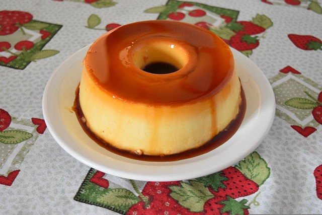

Pudim de leite Recipe

Description
Pudim de leite is a dessert made with sweetened condensed milk, similar to a flan, with a topping of caramelized sugar. It's a very popular dessert for lunch or dinner parties.
Ingredients
- 1 can of sweetened condensed milk
- 1 cup of white sugar
- 4 eggs (separated)
- 3/4 cup of milk
Steps
- Preheat an oven to 175 degrees C,
- Melt the sugar in a heavy saucepan over low heat, stirring constantly. Once the sugar becomes an amber syrup after about 10 minutes, pour it into a round baking dish, swirling so that the syrup coats all sides of the dish. Set aside to cool.
- Mix the other ingredients together, then use a blender to make sure the mixture is smooth, with no lumps.
- Pour it into the baking dish, place the dish in a large, deep baking tin and create a bain-marie by pouring boiling water into the tin until half full.
- Bake for 40 minutes, then remove from the oven and carefully lift the dish out of the baking tin. Leave for at least 1 hour until cool.
- To serve, place a large board or plate over the dish and carefully turn it upside down to take it off from the dish.
Return to main page